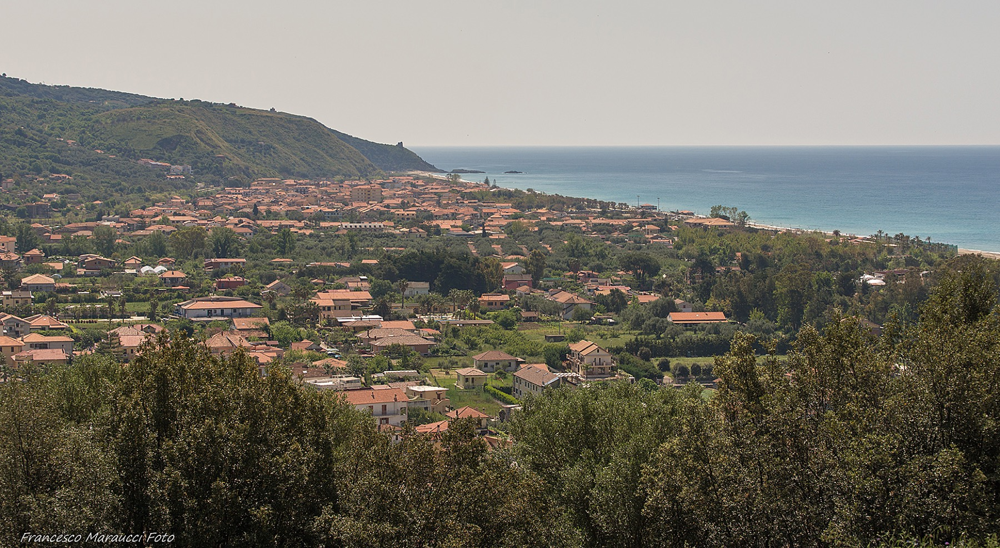

Il progetto
La guida ufficiale di Ascea
Ascea Turismo 360: una finestra sul territorio
Ascea Turismo 360 è il portale dedicato alla scoperta di Ascea. Una finestra sul territorio pensata per accompagnare visitatori e viaggiatori alla scoperta di tutte le sue bellezze, dai luoghi più iconici ai meno conosciuti, dalle esperienze da vivere ai posti in cui soggiornare.
La lunghissima spiaggia di Ascea Marina, il fascino del Parco Archeologico di Velia, i percorsi della rete sentieristica, Palazzo De Dominicis-Ricci ad Ascea Capoluogo, il Santuario della Madonna del Carmine a Catona sono solo alcuni dei luoghi di interesse storico, culturale e naturalistico presenti nel portale.
Uno strumento che attraverso approfondimenti e informazioni utili, vuole essere il punto di riferimento per chi desidera conoscere Ascea e anche prenotare la struttura ricettiva presso la quale soggiornare.
Esplora, visita, innamorati di Ascea.
Ascea Turismo 360 è un progetto finanziato dal Ministero dell’interno e gestito dal Comune di Ascea.